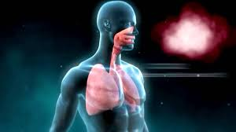

Solunum Sistemi
Solunum sistemi, vücudun oksijen almasını ve karbondioksiti dışarı atmasını sağlar. Hücrelerin enerji üretmesi için gerekli olan oksijen bu sistem sayesinde vücuda alınır.
Solunum sisteminin temel organı akciğerlerdir ve solunum yolları ile birlikte çalışır.
Solunum Sisteminin Yapıları
Solunum sistemi; burun, yutak, soluk borusu, bronşlar ve akciğerlerden oluşur.
Görevleri
- Oksijen almak
- Karbondioksiti vücuttan uzaklaştırmak
- Hücrelerin solunum yapmasını sağlamak
- Kan ile gaz alışverişini gerçekleştirmek
Solunumun Önemi
Solunum olmadan hücreler enerji üretemez. Bu nedenle solunum sistemi yaşam için zorunludur.
Solunum Sistemi Bölümleri ve Görevleri
| Yapı | Görevi |
|---|---|
| Burun | Havayı temizler, ısıtır ve nemlendirir |
| Soluk Borusu | Havanın akciğerlere iletilmesini sağlar |
| Akciğerler | Gaz alışverişinin gerçekleştiği organdır |
Kısa Özet
Solunum sistemi, vücuda oksijen alıp karbondioksiti uzaklaştırarak yaşamın devamını sağlar.
← Ana Sayfaya Dön